Bem Vindo à sala virtual da Congregação Visão Missionária Montreal:
Agora estamos também dentro da sua casa levando todas as benção que Deus tem para sua vida!


Culto ao Vivo
os cultos iniciam sempre às 18:00
Pedidos de Orações
Deixe aqui seu pedido de oração, receberemos no Email da igreja e iremos orar por todas as vidas.
Pedidos de Oração
Area do Louvor
Acesse a galeria de musicas da igreja. Lá você encontrará Louvores com cifras
E para você que gosta de adorar ao senhor cantando e tocando no violão um lindo louvor
Acesse o botão abaixo:
Estudos Bíblicos
Estudo 1: A Fé
Este estudo bíblico examina a fé, um elemento central da vida cristã. Exploraremos o significado da fé, sua importância para agradar a Deus, e exemplos inspiradores de fé nas Escrituras. Aprenderemos como a fé nos sustenta em tempos de dificuldade e como podemos crescer na fé, confiando nas promessas de Deus e vivendo segundo a Sua palavra.
Estudo 2: O Amor
Este estudo bíblico explora o amor, a essência do caráter de Deus. Através de diversos versículos, aprenderemos sobre o amor ao próximo, o amor de Deus por nós, o amor sacrificial de Jesus e como devemos amar incondicionalmente. Este estudo nos ajudará a compreender a profundidade e a importância do amor em nossa caminhada cristã.
Galeria de imagens
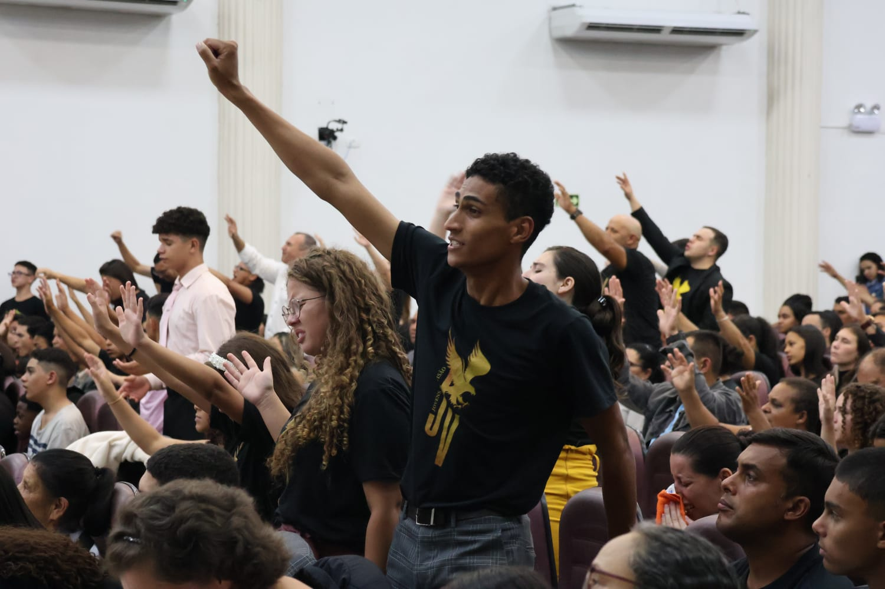
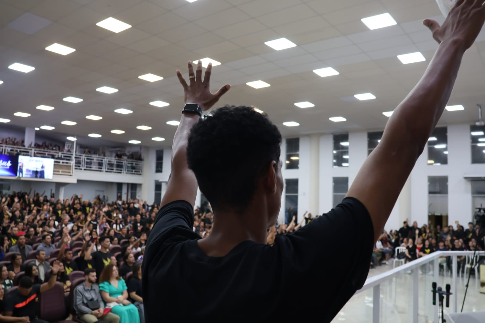
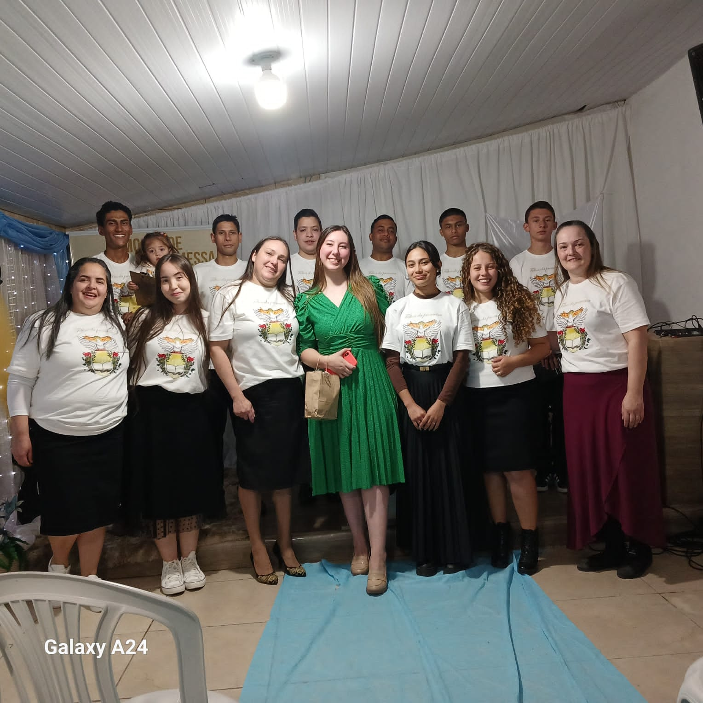
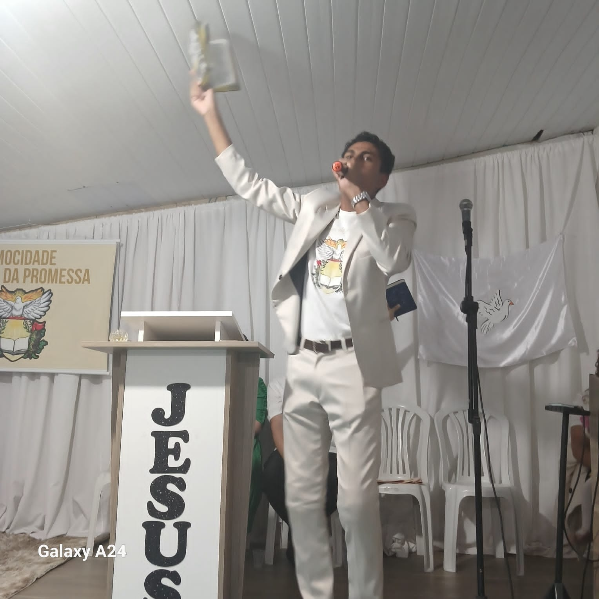
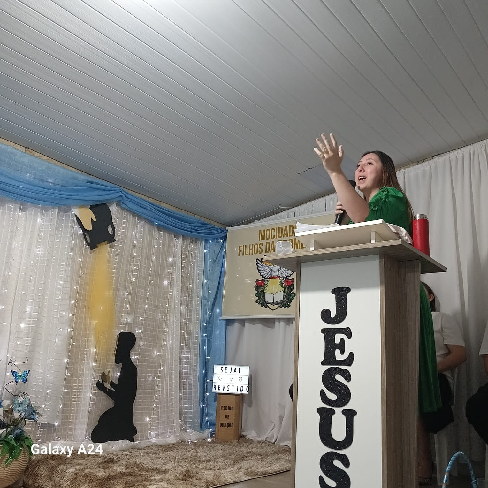
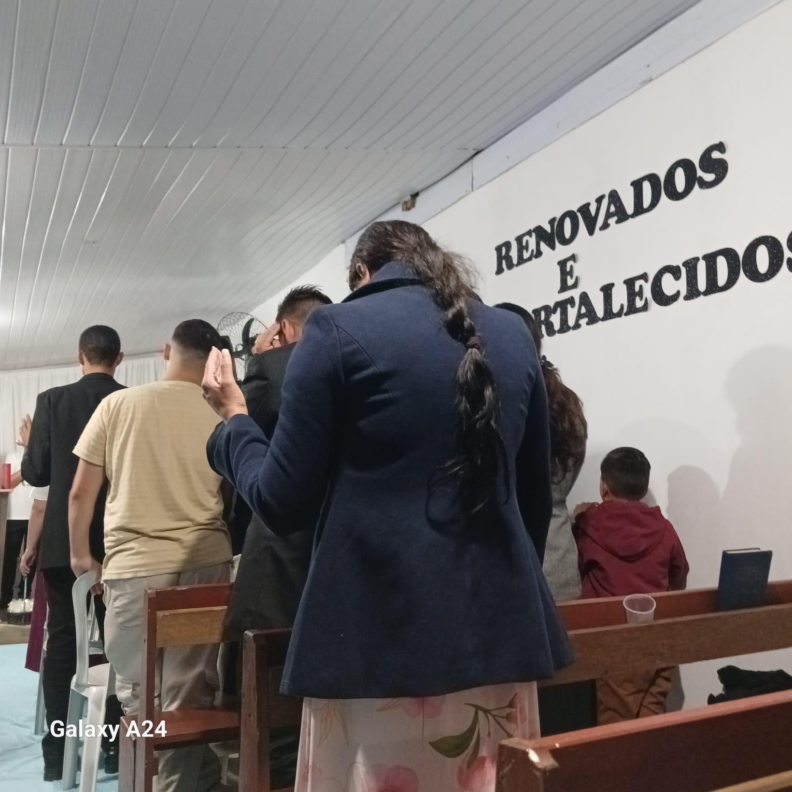
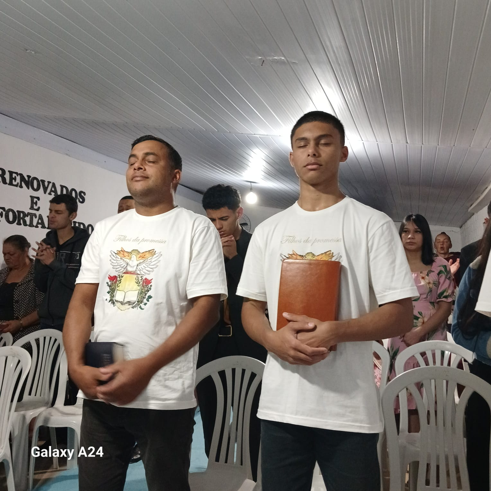
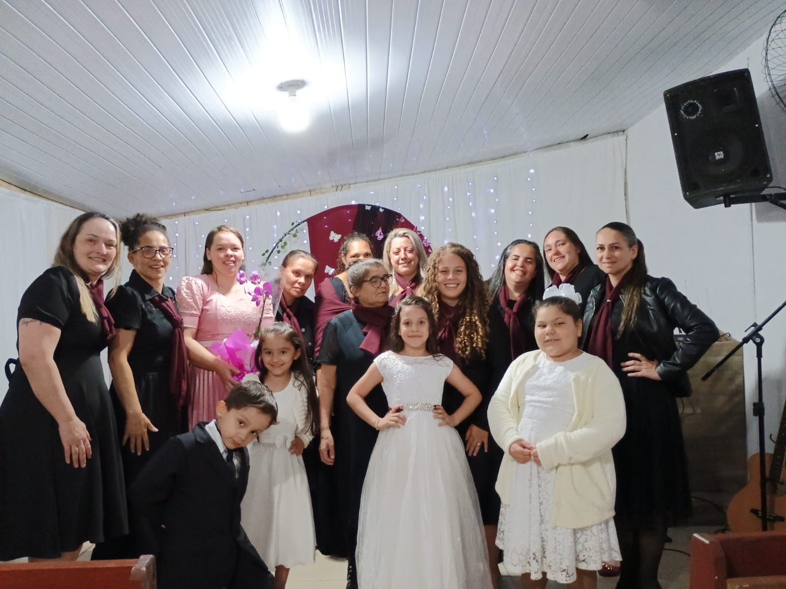
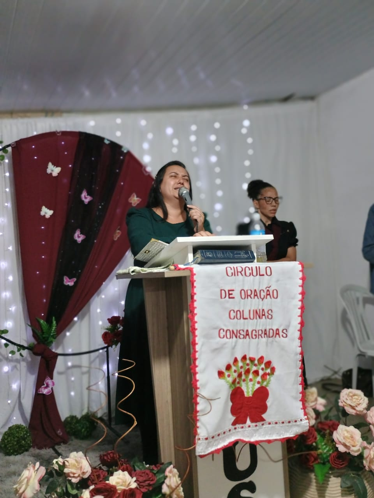
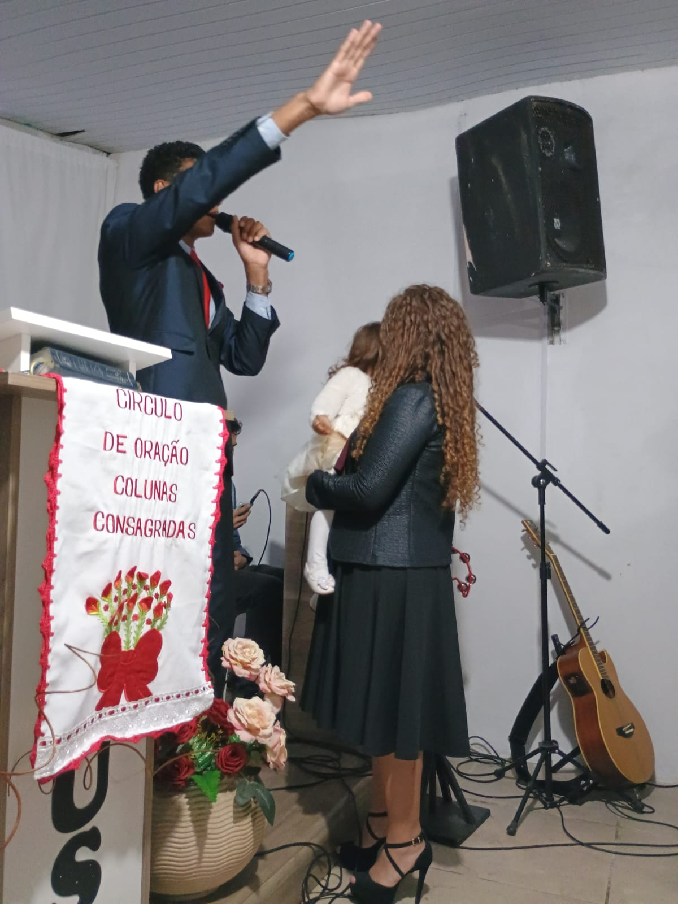
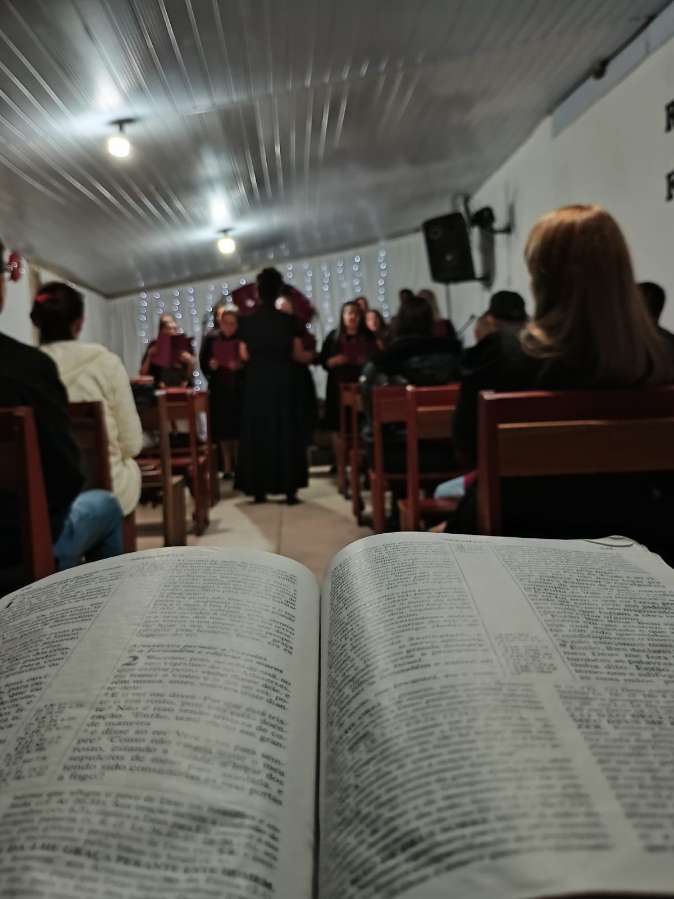
Área das Ofertas
Contribua com uma oferta para ajudar a nossa igreja a crescer ainda mais e alcançar mais vidas.
Assim conseguimos manter a Plataforma online em pé, para que mais pessoas possam ter em sua casa a presença de Deus.